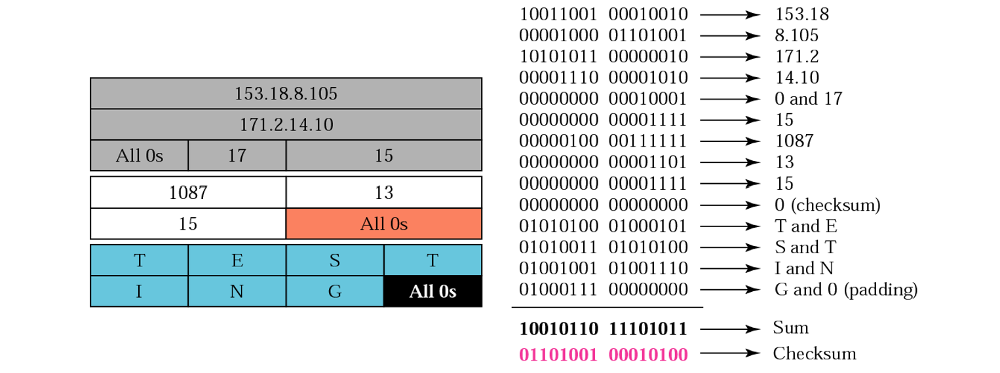
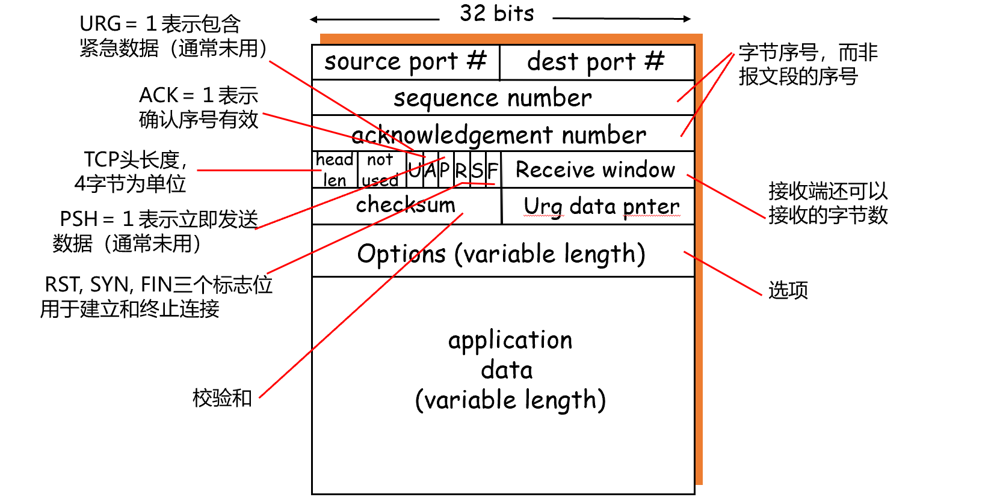
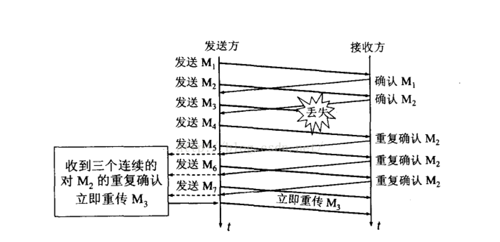
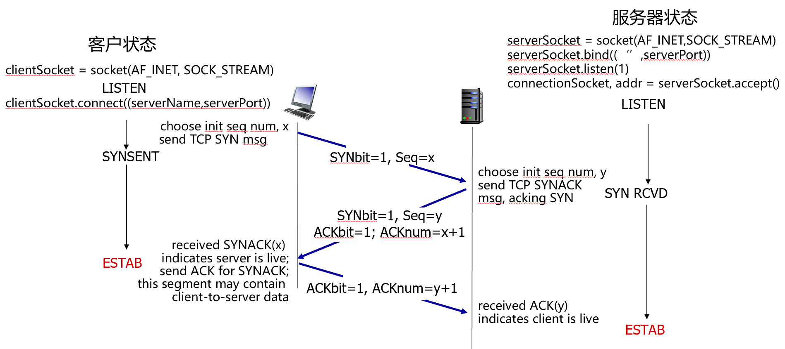
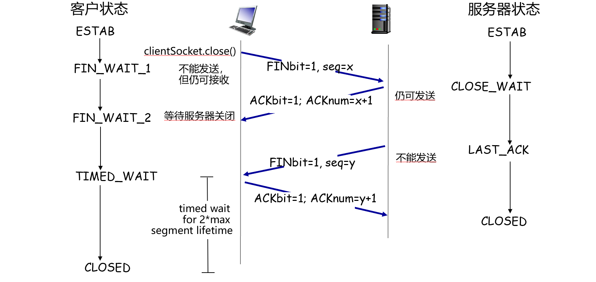

计算机网络05：传输层
本节重点
- 传输层提供的服务
- UDP 协议特性
- TCP 协议特性（可靠传输、流量控制、拥塞控制等）
1. 传输层的服务
传输层位于应用层和网络层之间，基于网络层提供的服务，向分布式应用程序提供通信服务。
1.1 进程之间的通信
每个进程需要一个标识，以便其它进程能够找到它。进程标识包括：
- 主机地址
- 主机上与该进程关联的端口号（端口号被用来区分同一个主机上的不同进程）
1.2 套接字编程
套接字（socket）：应用层和传输层的接口，也是应用程序和网络之间的API。

套接字编程（Socket Programming）是网络应用程序之间进行通信的基础方式，它为应用进程提供了一个在网络中收发数据的接口。套接字相当于通信端点，客户端和服务器分别创建套接字，通过 IP 地址 + 端口号建立连接并传输数据。
常见流程是：
- 服务器创建套接字、绑定端口、监听连接
- 客户端创建套接字并发起连接
- 连接建立后双方读写数据，最后关闭套接字
Socket 编程支持 TCP（面向连接、可靠传输）和 UDP（无连接、简单快速）两种方式，是网络应用开发的核心机制。
1.3 复用和分用
- 复用（发送方）：传输层从多个套接字收集数据，交给网络层发送。
- 分用（接收方）：传输层将从网络层收到的数据，交付给正确的套接字。
2. UDP
UDP是一种无连接传输服务，它仅在IP层的数据报服务之上增加了复用、分用和差错检测的功能。UDP无建立连接的延迟且不限制发送速率（不进行拥塞控制和流量控制）。
UDP主要提供下面两种服务：
- 进程到进程之间的报文交付
- 报文完整性检查（可选）：检测并丢弃出错的报文
2.1 UDP的报文段
UDP报文由报头和载荷（payload）组成：报头携带协议处理必需的信息，载荷承载上层数据。用于复用与分用的字段包括源端口号和目的端口号；用于差错检测的字段包括报文总长度和校验和。

2.2 校验和（checksum）
UDP校验和用于检测数据在传输过程中是否发生错误。计算时，UDP会将伪首部、UDP报头和数据部分一起参与校验。接收方对UDP报文及伪头求和，若结果为0xFFFF，则认为没有错误。

3. TCP
TCP是在不可靠的IP层之上实现的可靠数据传输协议，主要解决传输的可靠、有序、无丢失和不重复问题。其特点包括：面向连接、可靠传输、有序传输、流量控制、拥塞控制以及面向字节流。
3.1 TCP的报文段

- 源/目的端口号：用于复用与分用。
- 序号、确认号：保证可靠、有序传输。
- 标志位（SYN/ACK/FIN等）：用于连接管理。
- 窗口大小：实现流量控制。
3.2 可靠传输
3.2.1 发送端
发送方收到数据后创建报文段，若无定时器运行则启动；超时则重传序号最小的报文段。收到ACK后推进窗口。

3.2.3 超时重传
TCP只为最早未确认的报文段设置一个定时器。为了解决重传二义性，TCP采用Karn算法：重传时不更新RTT估计。
3.2.4 快速重传
如果在定时器到期前收到3次重复确认，立即重发报文段，无需等待超时。

3.3 流量控制
通过显式窗口通告告知对方可用缓存。发送端使用Nagle算法减少小包发送，提高效率。
3.4 连接管理
3.4.1 三次握手
用于初始化序号和确认双方收发能力。过程：SYN -> SYN+ACK -> ACK。

3.4.2 四次挥手
用于安全关闭连接。过程：FIN -> ACK -> FIN -> ACK。主动关闭方需进入 TIME-WAIT 状态。

3.5 拥塞控制
发送方通过拥塞窗口（cwnd）限制速率。核心策略为AIMD（加性增、乘性减）和慢启动。